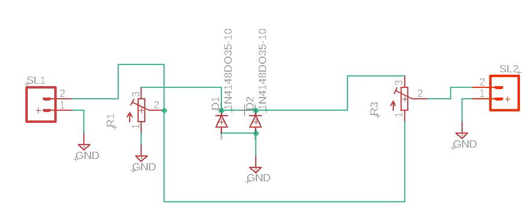
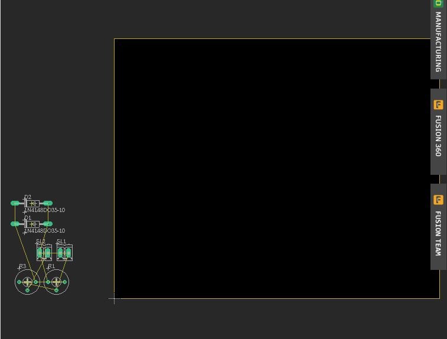
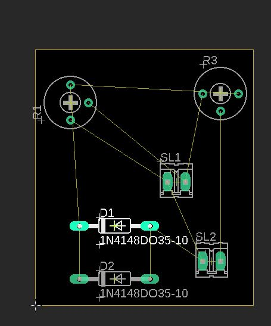
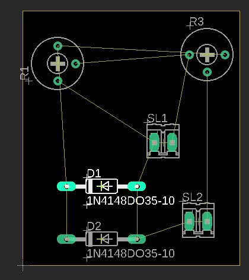
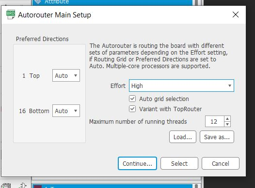
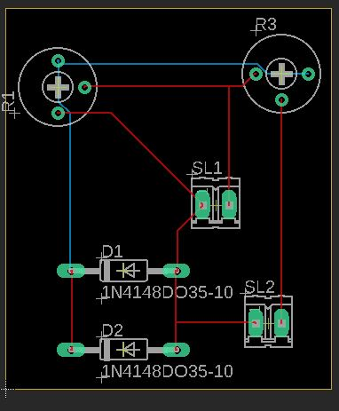
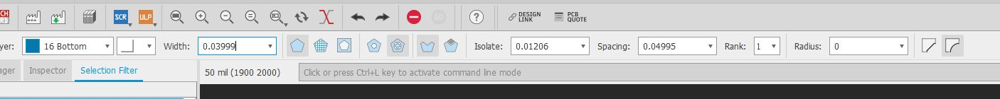

Jeg heter Monzer Faisal. Er 21 år gammel og går på Informasjonssystemer. Jeg elsker å programmere,
å fikle med elektronikk, foto og video og andre digitale kreativetetsaktiviteter. Jeg har vært obsessed med PCer og tech fra jeg var 4 år gammel.
Da hadde jeg en gammel LG maskin som hadde både Michael Jackson og Shrek på seg. Hva mer trenger man da?
Men samtidig liker å komme meg vekk fra skjermen. Her ser du meg på toppen av en gammel afrikansk lastebil i Sudan som har mest sansynlig sett alt fra andre verdenskrig til Dronning Elisabeth
Kontakt info: monzerfm@hiof.no - Discord: Monzemann#4695
Alu 3000 - 3D printing deleksamen 2
Har du noen gang glemt å kjøpe aluminiumsfolie med kutter i kartongen eller ungådd den fordi det koster hele 14kr mer?
Nye Alu 3000 er løsningen min
PS: alle relaterte filer er under alu3k-3d-files i github repo-et.
Stegene:
Lagde sketch i PS
Målte dimensjonene til aluminiumrullen
Lagde en rektangulær prisme som var hul og hadde tenner og var litt større enn folie boksen
Oppdaget at den var for stor for 3D printeren så jeg itererte på første versjonen
Delte formen i to
Brukte move tool til å sette den kutte forme i riktig plass. Måtte i tillegg extrude den litt sånn at åpningen i boksen blir mindre..
Brukte combine til å gjøre de til én form
Brukte construction plane og split til å dele formen i 2 slik at den passer i 3d printeren. Fra dette punktet kan jeg egentlig 3d printe og lime de to delene, men jeg vil prøve å lage en joint. Da legger jeg til en rektangel som stikker lenger ut den ene kroppen og bruker combine til å gjøre den en del av den ene samtidig som jeg får automatisk et hull med samme form og størrelse på den ene kroppen!
Nå har jeg to kropper som kommer sammen som et puslespill!
For å eksportere, gjør jeg først begge bodies til en component. Så går jeg på fil → 3d print → select og velger komponenten → refinement high for best kvalitet i meshformen → slå av send to 3d printer → ok og lagre filen der det passer meg. Den passet ikke
Versjon 2
Reduserer joint høyde fra 70mm til 20 for å passe det inni 3d printeren
Til slutt brukte jeg disse slicer instillingene:
Valgte å printe om natta så den blir ferdig når jeg våkner. Jeg følgte med i en halv time just in case og det gikk fint, men under selve printingen ble det tomt for plast etter ca 8 timer, da måtte jeg bytte med en annen farge. Det manglet mye plast fordi alle har eksamen.
Jeg lot den være i printeren og kom tilbake senere og oppdaget at den stoppet igjen for samme grunn, men denne gangen var det bare 20 min igjen. Det som er litt misledene er at "elapsed time" gikk fortsatt mens printen var pauset og ventet på plast, som er derfor det står 23 timer
Cardu 3000 - Elektronikk deleksamen 3
Jeg lagde en kortleser. Med litt mer kode kunne den blitt brukt som autentikasjon og sporing av hvem som kommer in og ut av en bygning eller et rom.
PS: alle relaterte filer er under cardu3k i github repo-et.
Åpne Autodesk Eagle og velg "New Schematic" fra "File"-menyen.:
Måtte lære hva en half wave rectifier er.
Legg til komponenter ved å søke etter dem i "Add"-menyen og dra dem inn i Schematic
Koble komponentene sammen ved å velge "Net"-verktøyet og klikke på komponentene for å lage forbindelser mellom dem.
Byttet til "switch to PCB" visning og endre størrelsen på PCB til ønsket dimensjoner
Plasserte delene strategisk: minimerer komplikasjoner på routes fra en komponent til en annen
Bruk "Ratsnest" for å beregne kortest mulig rute fra en komponent til en annen.
Bruk "Polygon" -verktøyet og sett det til solid med mellomrom og isolasjon satt, og deretter spore hele PCBen. Vet egentlig ikke hva dette gjør
Eksporterte gerberfil
håper på at det var riktig gjennomført


Hydro 3000 - Eksamensoppgave
Prosjektet mitt er best beskrevet som "modular interlocking hydroponic system". Den skal kunne holde vann, tømme vanntanken, gi belysning til planter og i tillegg være lett å oppgradere, både vertikalt og horisontalt. Dette, takket være mitt geniale og helt unike låsdesign som er veldig sikker... Designet er selvfølgelig bare en skisse/prototype som har mange mangler, men heldigvis kjører og funker alt greit. Printen er 45% av det opprinnelig designet. Tanken er at den egentlig skal være minst 30cm høy for plantenes skyld.
Jeg mener dette prosjektet er relavant for bærekraftig utvikling fordi det kan redusere vannforbruk ved dyrking med opptil 90% siden man kan la vannet være til plantene har absorbert alt de kan av næring, vannet forsvinner ikke p.g.a. vær og man kan til og med resirkulere det eller bruke det til vanning av utendørs jordbruk! Det er en win-win-win for miljøet og økonomien (i stor skala😬🤐😰). Det eneste som kan være en ulempe, er energiforbruket til mange lys som skal erstatte sola, men til og med den energien kan bli generert på en miljøvennlig, bærekraftig måte.
PS: alle relaterte filer er under hydro3k i github repo-et, men de mest riktige filene er i mappen "Correct".
Prosjektet gikk ganske smooth, så jeg har ikke mye å klage på.
Notater:
Bilder er inkludert i mappen hydro3k/imgs. Vennligst sorter etter dato for å få med deg arbeidet i riktig rekkefølge.
Måtte bruke power supply for motoren istedenfor f.eks batteri eller forenet strøm sammen med lyset
Elektronikkhulen finnes kun i 3D filen fordi det er den opprinnelige størrelsen. Det hjelper ikke å printe den nye iterasjonen, fordi det hadde ikke passet i mini versjonen uansett. Siden oppgaven går ut på bærekraftig utvikling, hadde det vært forsøpling å lage den. Hullet måtte ikke kræsje med modulær føttene, så den har clearance på 0.3 mm xD
For å få samme extrude på både toppen og bunnen prøvde jeg edite sketch plane, edit feature men ingenting funka. Til slutt flytta jeg alle kroppene sånn at sketchen ble på samme sted. Etter det extruda jeg mindre enn størrelsen til hullet slike at det passer bedre
Byttet til "switch to PCB" visning og endre størrelsen på PCB til ønsket dimensjoner
For “håndaket” passet jeg på at den var i midten av hver side. Jeg tok de samme dimensjonene som er på insiden og lagde en krok med de.
Fusion filen er det som er f3d. Dette er den eneste måten jeg vet for prosjetk deling.

.jpg)
.jpg)
.jpg)

.jpg)